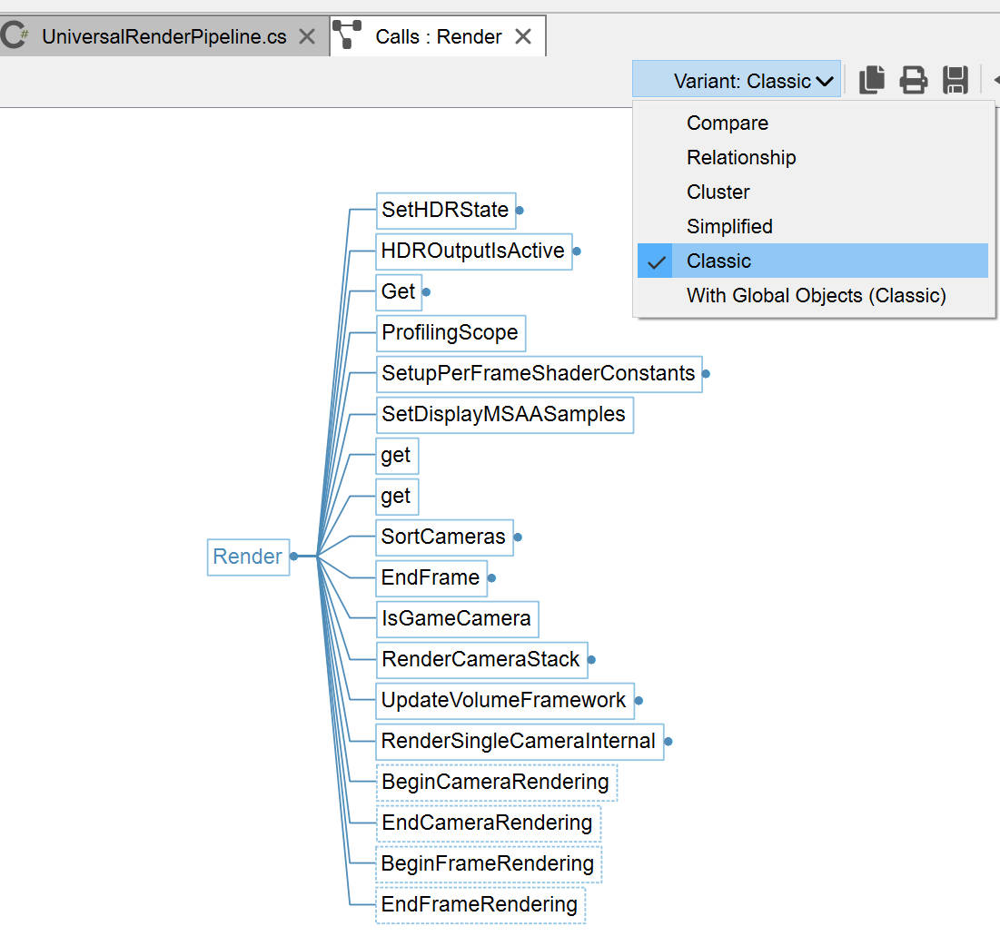

Developer Tools
Table of Contents
- IDE
- JetBrainsIDE
- VSCode
- VisualStudio
- Init
- 使用
- ERROR
- 快捷键失效
- ERROR: unexpected end of file while looking for precompiled header. Did you forget to add '#include "pch.h"' to your source?
- ERROR: 是否忘记向源文件中添加#include"pch.h"?
- ERROR argument of type "const char *" is incompatible with parameter of type "LPCWSTR"
- ERROR unresolved external symbol _D3DX11CompileFromFile
- ERROR 'fopen': This function or variable may be unsafe.
- additional include directories 中添加目录后没有生效
- Android Studio
- Understand
- ZeroBrane
- AI Plugins
- Normal Tools
- Crack Tools
game developer tools.
<!– more –>
IDE
JetBrainsIDE
Init
插件安装
插件方法
intellimacs and ideavim
https://github.com/MarcoIeni/intellimacs
https://github.com/JetBrains/ideavim
intellimacs 依赖 ideavim, IDEA Which-Key, 其使用类似 spacemacs 的快捷键设置。
Highlight
- 高亮显示相同名称字符
Edit > Find > Highlight usages in file. 快捷键 Ctrl+Shift+F7
或者
Edit > Find > Find
https://stackoverflow.com/questions/10901356/pycharm-highlight-occurrences
- HighlightBracketPair
- MultiHighlight
https://github.com/huoguangjin/MultiHighlight
" Press `'` to toggle highlight
map ' :action MultiHighlight<CR>
" Press `"` to clear all highlights in current editor
map " :action MultiHighlight.ClearAction<CR>
使用
JetBrains IDE action 名称
方法 1：使用 ideavim 的 Track action Ids 功能，当触发某个 action 时，ideavim 会记录其对应的 action 命令名称。
方法 2： 在下面连接中搜索
Project 窗口高亮当前打开的文件

避免自动代码格式化时换行
Settings/Editor/Code Style/Hard wrap at xxx columns 将列数设置大一些，如 1024。
AutoPEP8
设置编程语言后缀名
File/Settings/Editor/File Types
在上面设置项中，可以为编程语言设置多个后缀名
设置项目过滤文件夹和文件
File | Settings | Project Structure
在上面设置项中，可以为项目设置过滤的文件夹
File | Settings | Version Control | Ignored Files
查看 partial class 的多个源文件
ERROR
UNITY_EDITOR 宏内的代码不高亮
Case 1
如下图所示，选择 Solution，然后选择 Assembly-CSharp 内的对应文件，UNITY_EDITOR 宏内的代码就可以正常高亮显示了。
VSCode
Init
配置
字体
在 File/Preferences/Settings/Text Editor/Font 中设置字体。
JetBrains Mono, 微软雅黑
插件安装
theme
- Dracula Official 吸血鬼主题
VSpaceCode
插件中心安装该插件就可以了，无需额外安装。
- vspacecode github https://github.com/VSpaceCode/VSpaceCode
- vspacecode 文档 https://vspacecode.github.io/docs/
Explorer Exclude
支持文件夹和文件的隐藏。
VSCode Unity 开发环境插件
- Debugger for Unity, 支持 vscode debug unity 项目
- Shader languages support for VS Code，支持 shader 语法高亮
- C# for Visual Studio Code (powered by OmniSharp), 支持 C#
- vscode-solution-explorer, 支持 visual studio solution
- Unity Code Snippets(Kleber Silva), 支持常用的 snippets
使用
常用快捷键
| 快捷键 | 说明 |
|---|---|
| Ctrl+p | 快速打开文件 |
搭建 unity 开发环境
- 安装 .net sdk
# 查看已经当前安装的dotnet sdk版本 dotnet --list-sdks # 查看已经当前安装的dotnet runtime 版本 dotnet --list-runtimes
- [Windows] 重启电脑， 使得 PATH 环境变量能生效
- [OSX] 安装 mono
https://www.mono-project.com/download/stable/
# 查看当前已经安装的 mono 版本 mono -V
- unity 项目安装 com.unity.ide.vscode package
- 安装 Unity 开发环境插件 Unity 开发环境插件
- https://code.visualstudio.com/docs/other/unity
ERROR
VisualStudio
Init
配置
设置语言
Tools-Options-Environment-InternationalSettings
Tips:
需要使用 Visual Studio Installer 安装 English 语言包
设置代码格式
工具-选项-文本编辑器-C#-格式设置
导入配置文件
- Go to Tools > Options
- Go to Environment > "Import and Export Settings"
- Change the path to existing one
安装各种插件
VsVim
在 Extension 中搜索 VsVim 进行安装
重启 VisualStudio
下面快捷键都使用 VsVim
Ctrl+U / up page
Ctrl+D / down page
Ctrl+V // block opt
Visual Assist
http://www.wholetomato.com/
C:盘根目录下搜索 VA_X.dll 可以找到该插件的安装目录
Productivity Power Tools
在 Extension 中搜索 Productivity Power Tools 进行安装
功能介绍 http://blog.chenxu.me/post/detail?id=f9d99fbe-f41d-465b-ab09-91024382daf6
官网地址
C# Outline 2015
在 Extension 中搜索 C# Outline 进行安装
该插件可以让 VS 支持函数内语句的折叠
Nuget
windows 包管理软件。
http://www.nuget.org/
LicenseHeaderManager
在 Extension 中搜索 LicenseHeaderManager 进行安装
使用说明文档: https://github.com/rubicon-oss/LicenseHeaderManager/wiki
插入 LicenseHeader 的快捷键 Alt+l
JetBrains.ReSharperUltimate
CodeMaid
支持对函数进行排序
http://www.codemaid.net/
Viasfora
括号显示增强。对应不同 vs 版本的插件，可以去 github 下载。
https://github.com/tomasr/viasfora/releases
MetaProject
标准输出框优化，Debug 界面优化等等
dracula theme
使用
常用快捷键
| 快捷键 | 说明 |
|---|---|
| Shift+Alt+o | (VA)打开文件 |
| Shift+Alt+s | (VA)查找 Symbol |
| Ctrl+k+Ctrl+o | (VS)头文件源文件切换 |
| Ctrl+Shift_F12 | Enable/Disable VsVim |
| Ctrl+F | 当前页面查找 |
| Ctrl+, | Edit.GoToAll |
| Ctrl+] | Edit.GotoBrace 跳转到匹配的括号 |
| Ctrl+Space | Autocomplete using IntelliSense |
| Ctrl+. or Alt+Enter | Quick Actions |
Find a File
方案 1
按照下图所示，在 tool 工具栏开启搜索框：

- Ctrl+/ 定位到搜索框同时输入>
- 输入 of + 空格 + 文件名称
方案 2
- Edit.GoToAll Ctrl+, Ctrl 键加逗号可以打开智能搜索框
Highlight Brace
Visual Studio 只支持移动到左边括号时，匹配对应的右边括号。
如何分割代码编辑窗口
右键点击选项卡，选择 新建垂直选项卡组
https://jingyan.baidu.com/article/4ae03de3c8c8c73eff9e6bee.html
安装卸载 SDK、组件、语言包
Tools/Get Tools and Features 菜单可以打开 Visual Studio Installer
也可以通过 Listary 来打开
添加目录中.cpp 和.h 文件到工程中
显示所有文件
选中需要添加的目录
右键菜单中选 包括在项目中
将空项目设置为控制台应用程序
项目 - 属性 - 链接器 - 系统 - 子系统 下拉框中选择控制台
ERROR
快捷键失效
Ctrl+, Ctrl+D Ctrl+U 快捷键失效
先将 VS 快捷键进行重置，然后，在 VSVim 中设置 Ctrl+D Ctrl+U 使用 VsVim。
ERROR: unexpected end of file while looking for precompiled header. Did you forget to add '#include "pch.h"' to your source?
project property/c-c++/Precompiled Headers/Precompiled Headers-Not Using Precompiled Headers
ERROR: 是否忘记向源文件中添加#include"pch.h"?
项目–XXX 属性–配置属性–C/C++–预编译头–预编译头 下拉框选择不使用
ERROR argument of type "const char *" is incompatible with parameter of type "LPCWSTR"
Project -> Properties -> Advanced (or. General for older versions) -> Character Set option to Use Multi-Byte Character Set
ERROR unresolved external symbol _D3DX11CompileFromFile
#pragma comment(lib,"d3d11.lib")
ERROR 'fopen': This function or variable may be unsafe.
Project -> Properties -> C/C++ -> Preprocessor -> Preprocessor Definitions 添加 _CRT_SECURE_NO_WARNINGS
Tips: Release Debug Win32 Win64 都需要添加
additional include directories 中添加目录后没有生效
检查当前的 Configuration 和 Platform 对应的配置中 additional include directories 设置是否正确。
例如，当前的 Configuration 为 Debug，当前的 Platform 为 x86。可能你设置 additional include directories 时，Configguration 为 Debug，Platform 为 x64。
Android Studio
ERROR
连接 dl.google.com 失败
通过一个 ping 网站,如爱站网 https://ping.aizhan.com/ 或站长工具 http://ping.chinaz.com
输入 dl.google.com（dl-ssl.google.com 无法 ping 通）
挑选一个响应时间较短的 IP，如第一个：203.208.43.70。
在 hosts 配置中添加如下配置
203.208.43.70 dl.google.com
203.208.43.70 dl.l.google.com
203.208.43.70 dl-ssl.google.com
ipconfig /flushdns #清除 DNS 缓存内容。 ipconfig /displaydns #显示 DNS 缓存内容
Understand
Base
下载
安装插件
直接将 .upl 文件拖放到 Understand GUI, 或者手动将 .upl 文件放到下列目录:
Windows – e.g. C:\Program Files\SciTools\conf\plugin\User\Graph
Mac – e.g. Users/username/Library/Application Support/SciTools/plugin/Graph
Linux – e.g. /home/username.config/SciTools/plugin/Graph
使用
源代码分析
以 URP 源代码为例，进行说明:
搭建环境
- 创建目录 ~/urp-14.0.7, 将 com.unity.render-pipelines.core@14.0.7 和 com.unity.render-pipelines.universal@14.0.7 copy 到该目录下。
- 点击菜单 File / New / Project 创建工程, 在弹出窗口添加源代码文件夹 ~/urp-14.0.7
- 点击菜单 Project / Config Project, 在 C#/Preprocessor Symbols 中添加预定义宏 UNITY_2021_1_OR_NEWER
- 配置文件过滤


查看函数调用关系
URP 的入口在 UniversalRenderPipeline.cs::Render, 找到该函数，右键点击 ViewInformation，可以看到 Information Browser 窗口会显示该函数的一些信息如下：

展开 Calls 条目，可以看到，Render 函数调用了哪些函数，如下图：
注意到，上面函数没有按照调用先后顺序显示，为此我们可以点击 Calls 后面的倒三角图标，然后按照下图所示，选择按照 Reference 排序

点击 Calls 条目，前面的网络图标，可以显示调用关系图如下：

注意到，上面关系图没有按照调用先后顺序显示，为此我们按下图所示，选择 Variant: Classic:

我们还可以在 graph 画布上点击鼠标右键，选择 Level/2Level，以显示 2 个调用层级，如下图：

我们还可以在 graph 画布上的节点上点击鼠标右键, 选择 Open Node 来单独展开该 Node，如下图：

看着功能挺强大，挺实用，不过说实话，静态分析不如直接通过调试来了解代码的执行逻辑。
查看类图

查看 partial class 的多个源文件
方案 1
方案 2

ZeroBrane
Init
在菜单栏中选择 Edit/Preference/Settings: User 会打开配置文件 user.lua，将自己的配置内容 copy 到打开的配置文件中就可以了。
Normal Tools
Sqlite Tools
Sqlitestudio https://sqlitestudio.pl/index.rvt
SQLiteExpert 个人免费 http://www.sqliteexpert.com/
GPU
GPU 分析工具
- Adreno GPU Profiler
- Snapdragon Profiler (Adreno GPU Profiler 的替代者)
- Intel GPA
- RenderDoc
Crack Tools
dnSpy
可以调试 UnityEditor, UnityGame.
- 兼容性测试
- unity 2019.1.0f2 版本无法调试 UnityEditor
- unity 2019.1.0f2 版本无法调试 UnityEditor
- https://github.com/0xd4d/dnSpy
ILSpy
该工具可以查看 C# DLL 的源代码
IDA Pro
IDA PRO 简称 IDA（Interactive Disassembler），是一个世界顶级的交互式反汇编工具
https://www.hex-rays.com/products/ida/index.shtml
Unity Studio
该工具可以查看 Unity3D 游戏中所包含的所有资源
https://github.com/Perfare/UnityStudio
Disunity
该工具可以导出 Unity3D 游戏中的所有资源
https://github.com/ata4/disunity
ninjaripper
该工具可以导出 DirectX 系列的游戏资源
UABE
该工具可以提取 Unity3D 游戏中所包含的所有资源
https://github.com/DerPopo/UABE
Hex 编辑器
- web 版本 Hex 编辑器 https://hexed.it/